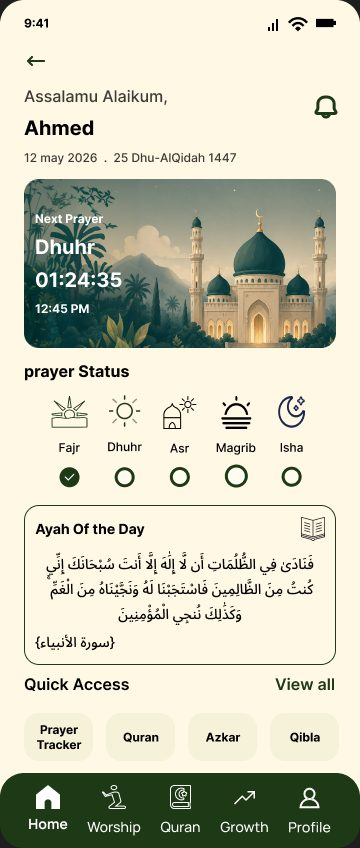
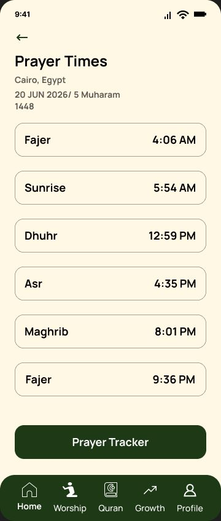
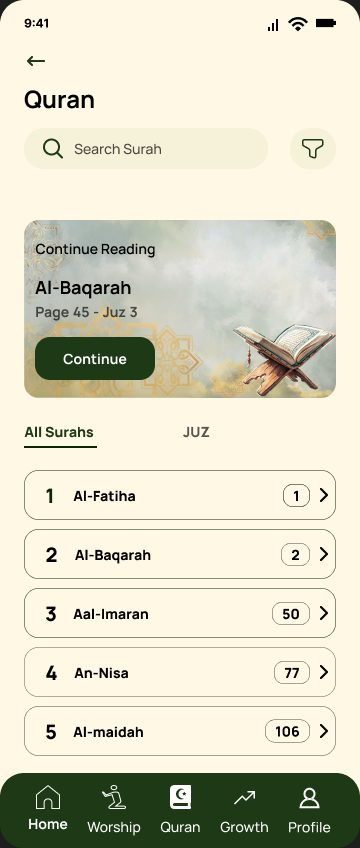
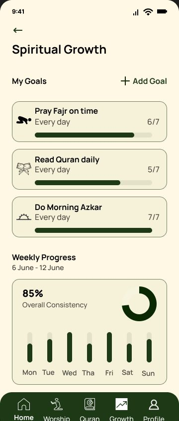
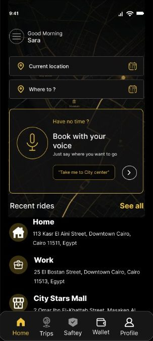
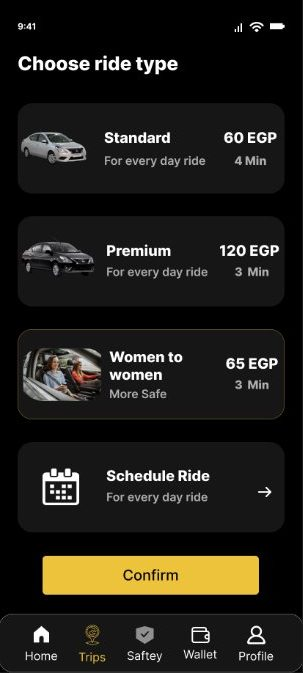
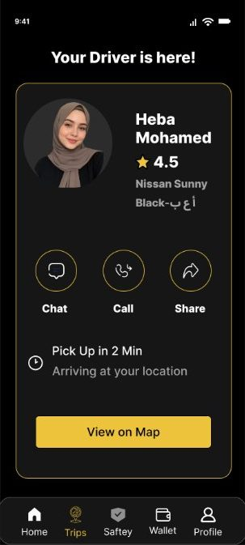
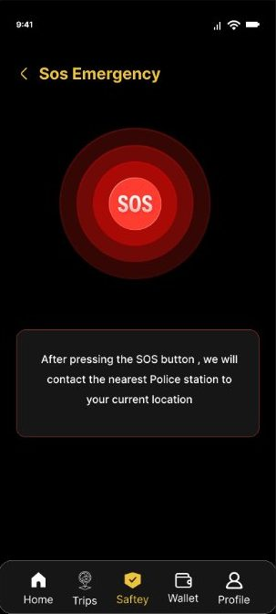
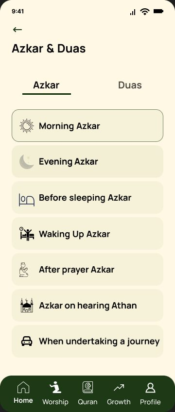
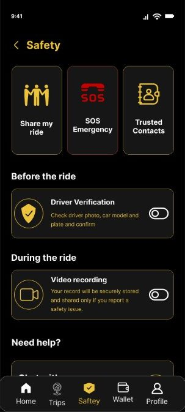

Sukoon
Mobile app, UX and UI design
A calm companion that helps Muslims keep their prayers and Quran reading consistent.




I design apps and websites that feel clear, calm and made for real people.
Mobile app, UX and UI design
A calm companion that helps Muslims keep their prayers and Quran reading consistent.




Mobile app, UX and UI design
A ride-hailing app that puts safety and a clear fare breakdown ahead of speed and price.




I design digital experiences that are beautiful, intuitive and built around real people.
I’m Sara, a UI and UX designer in Egypt. I turn complex ideas into simple, meaningful experiences through research, wireframing and careful visuals.
UI designUX researchWireframingPrototypingFigma
A spiritual companion that helps Muslims build consistent worship habits.
Many Muslims want to pray and read Quran every day, but busy schedules and distractions get in the way. Existing Islamic apps deliver content, not guidance or accountability, so people start with good intentions and drift.
Muslim Pro and Salatuk cover prayer times and Quran well. The gap is habit-building, personalization and emotional engagement.
| Sukoon | Muslim Pro | Salatuk | |
|---|---|---|---|
| Prayer tracking | ✓ | Limited | ✗ |
| Worship habit building | ✓ | ✗ | ✗ |
| Spiritual goals | ✓ | ✗ | ✗ |
| Mood-based guidance | ✓ | ✗ | ✗ |
| Ad-free experience | ✓ | Premium required | Mostly yes |
“I know what I should do, but I struggle to stay consistent.”
“I need something that fits naturally into my day and helps me stay connected to my faith.”
A one-tap “Did you pray?” check-in turns daily prayer into a visible streak, so consistency becomes something you can see.

Pick Stressed, Anxious, Sad or Grateful and see fitting verses, duas and azkar, so the app meets the moment instead of just listing content.
Set a goal like “Pray Fajr on time” and track it weekly. After reading Quran, a short journal asks what you learned today.
Continue reading where you stopped, search by surah, and open Tafsir without leaving the reading flow.
Calm, minimal and spiritual. Poppins for Latin text and Cairo for Arabic.
A safer, smarter and more transparent ride-hailing experience.
Ride-hailing apps create stress: safety worries, unclear surge fees, driver cancellations and slow support. Women commuters, late-night travelers and students feel it most.
Most ride-hailing apps optimize for speed and scale. Very few focus on emotional comfort and proactive safety, and that became Waddi’s direction.
| Waddi | Uber | Careem | inDrive | |
|---|---|---|---|---|
| Women-to-Women rides | Yes | Limited in some regions | Limited | No |
| SOS emergency button | Advanced safety system | Standard | Standard | Basic |
| Pricing transparency | Clear fare breakdown | Surge sometimes unclear | Better estimates | User negotiates |
| Emotional reassurance | Strong | Efficiency-focused | Convenience-focused | Price-focused |
“I want to arrive safely.”
Needs trusted, reliable rides when commuting and traveling with her children.
Female passengers can ride with female drivers, which lowers anxiety, builds trust and encourages more women to travel.
Book with your voice. The assistant detects route deviations, helps with reservations and offers quick emergency help.
Share live location, alert trusted contacts and reach emergency support from a single, always reachable button.

Driver verification before the ride and video recording during it, all in one place.
To keep navigation clear, I grouped the app content around how riders think, using card sorting.
Open the card sorting boardA minimal dark interface where yellow marks every action and red is reserved for emergencies.